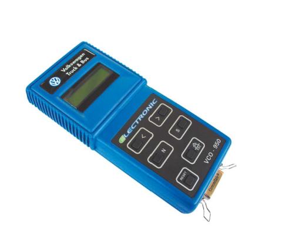
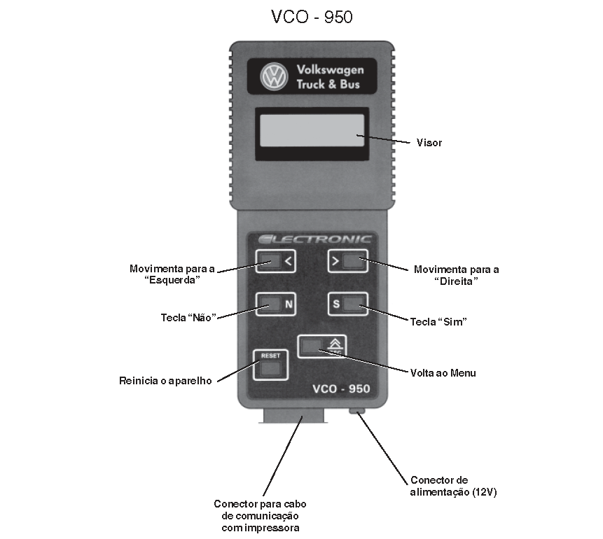
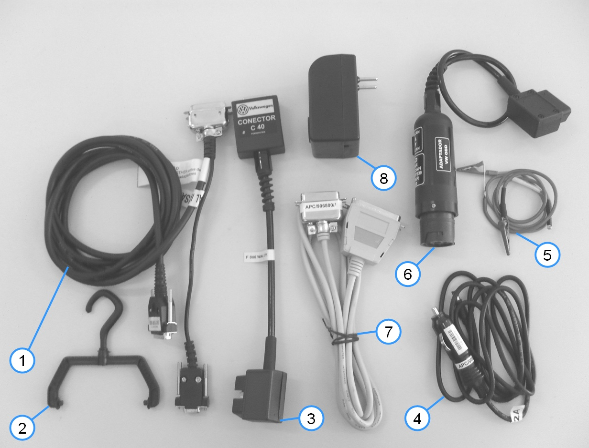
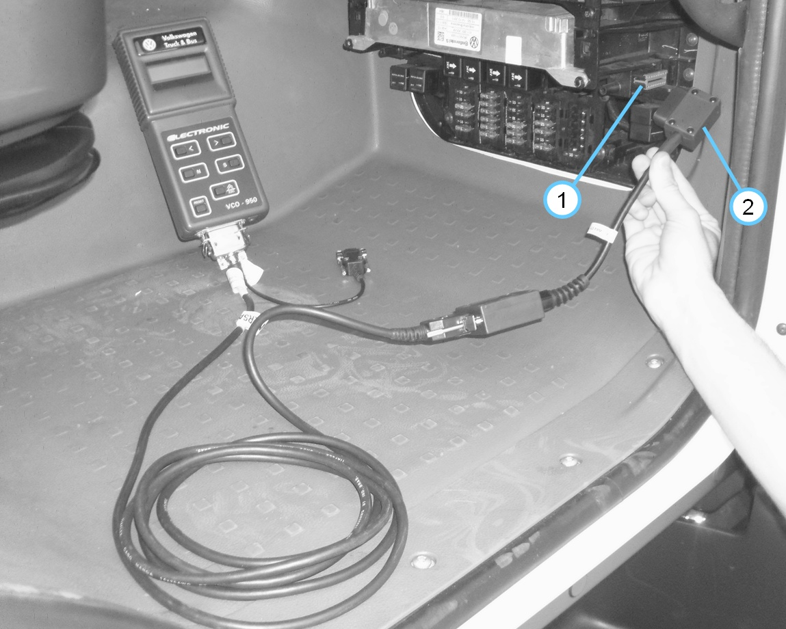
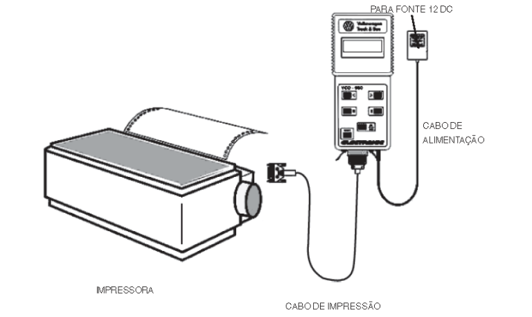

Informações Importantes
Visto que há variedades de modelos de veículos equipados com o motor D08, a navegação do VCO-950 também será diferente, portanto verificar a árvore de navegação antes do manuseio da ferramenta de diagnóstico.
Manual de Inicialização
1 Descrição do Equipamento A
ferramenta de diagnóstico Volkswagem VCO - 950, mostra no visor os
códigos da falhas detectadas pelo módulo EDC7, e efetua leitura de
valores sistema. 
2 Acessórios

1 - Cabo DB9/DB25 serial; 2 - Gancho; 3 - Cabo de diagnóstico C40; 4 - Cabo de alimentação; 5 - Cabos auxiliares para a medição; 6 - Cabo adaptador OBD; 7 - Cabos de impressão; 8 - Fonte de alimentação 12 (bivolt).
3 Ligação
3.1 Localização e conexão do conector de diagnóstico no veículo  1 Posicionado no lado direito do painel na caixa de relés e fusíveis - Retirar a tampa da caixa de relés e fusíveis para ter acesso ao conector OBD.
2 Conexão do VCO-950 no veículo - Conecte o cabo de diagnóstico C40 no VCO-950; - Com a chave de ignição desligada, conecte o VCO-950 no veículo; - Para efetuar as leituras, ligue a chave de ignição. 4 Operação Após ligado, o VCO-950 apresentará a mensagem que identifica a versão do software e o número de série (NS) do VCO-950:
Avance as etapas de navegação do VCO 950 conforme a opção desejada. Para caráter de referência, segue abaixo o exemplo de fluxograma do veículo 24-280:
Etapas da navegação 1 Teste Nesta opção é possível verificar os códigos de defeito, leituras, leituras especiais, análises gráficas e atuadores. Essa verificação pode ser realizada com o motor parado ou funcionando.
Teste 1 - Códigos de defeito Apresenta os códigos de defeitos armazenados na memória da EDC7. - Defeitos presentes - Defeitos passados - Defeitos intermintentes
Teste 2 - Leituras Permite verificar várias condições do motor, com o motor parado (ignição ligada), funcionando ou veículo em movimento. - Tensão das baterias - Rotação do motor - Rotação ML - Pressão no Rail - Pressão de admissão - Pressão atmosférica - Pressão do óleo - Pedal do acelerador - Temperatura do líquido de arrefecimento - Temperatura de admissão - Temperatura do turbo - Temperatura externa - Temperatura interna da ECU - Início de injeção - Velocidade do veículo
Teste 3 - Leituras especiais Permite verificar os seguintes valores: - Distância percorrida pelo veículo - Horas de funcionamento do motor - Horas de funcionamento do módulo EDC7 Teste 4 - Análise gráfica Com o veículo funcionando, permite visualizar valores de sistemas do motor D08 que são passíveis de calibração e ajustes, que são: - Tensão da bateria - Rotação do motor - Pressão de admissão - Pressão do óleo - Pedal do acelerador - Temperatura do fluido de arrefecimento - Temperatura de admissão - Início de injeção
Teste 5 - Atuadores Permite realizar testes em sistemas para verificar a atuação dos componentes. - Teste de compressão - Válvula de baixa pressão de combustível - Sistema de alta pressão - Corte dos injetores (1,2,3,4,5 e 6) - Teste de aceleração dos cilindros (1,2,3,4,5 e 6)
2 Impressão
O VCO-950 está preparado para acionar impressoras do padrão ASCII. Impressoras com um padrão diferente deste, podem imprimir alguns caracteres estranhos e diferentes dos esperados. Ao conectar a impressora ao VCO-950, certifique-se de que a impressora esteja desligada. O VCO-950 pode ser desligado e levado até a impressora mais próxima, a qual deve ser ligado novamente (utilize a fonte de 12 volts DC, fornecida no KIT da maleta). Ao tornar a ligar o VCO-950 com a finalidade de imprimir os resultados, na tela que se lê " OUTRO MODELO - SIM ou NÂO" coloque a opção "NÂO" e vá para a opção "IMPRESSÂO".

3 Apagar memória
Esta função apagará as falhas armazenadas na memória da EDC7.
4 Número da ECU
Nesta opção o VCO-950 indica sua calibração (conforme o exemplo é 5125833-3179) e a versão do software (P362523).
|
||||||||